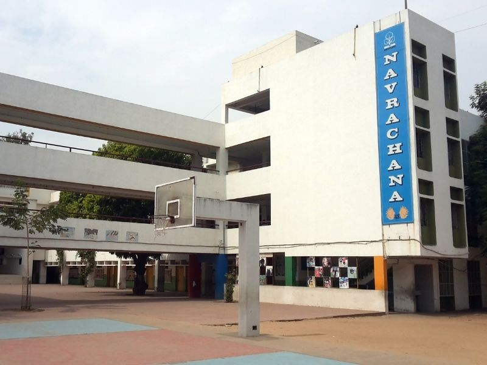
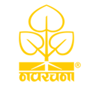

Navrachana School
Navrachana School,Vadodara,Gujarat (NSSCBSE), is a 10+2 private school, affiliated to CBSE.
NSSCBSE took off in the year 1995 with 500 students and 18 teachers. The school is managed by Navrachana University Managing Committee through Regional Directorate,Vadodara,with goodwill and cooperation of local intelligentsia and LMC. The school is located in Sama,the outskirt of Vadodara city with the prime objective to impart education to each and every section of the society.
Founded in 1957,Navrachan foundation is the largest Non-Governmental Educational Organization in the country, managing over 700 educational institutions.Navrachana institutions have rendered a unique service, in not only dispelling ignorance and illiteracy but also in producing patriots, freedom-fighters, social reformers, intellectuals, thinkers, legal luminaries, doctors, engineers and scientists of unparallele
d merit, integrity and caliber.
N.S.S.COLLEGE MANAGING COMMITTEE
Sama Road,Vadodara-388001
Shri. L. R. Sahni
Regional Director
Navrachana Network Of schools,Baroda zone
Sama Road,Vadodara-009833
Tel:(0651)2541076 Fax:(0651)
2308195
Shri Mrs.Suprabha Menon
Principal
Navrachana School,Vadodara
Contractors'Area,Road No.4
Baroda-831001,Gujarat
Tele-Fax-0657-2226745,2227148,
E-Mail:nss.baroda@gmail.com
Website:www.nssbaroda.org